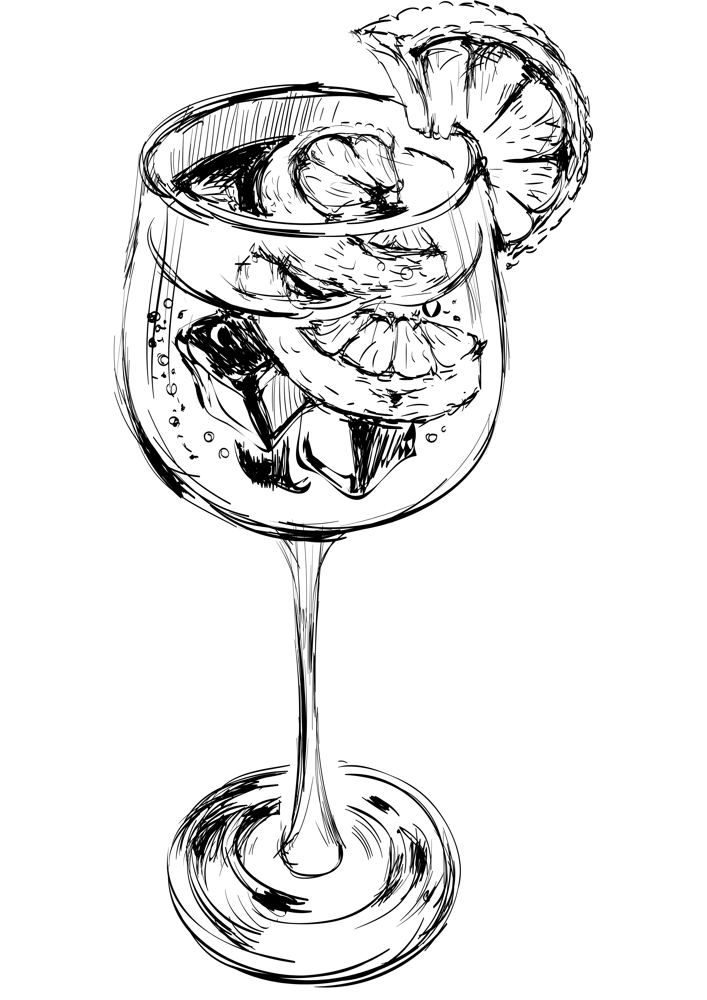
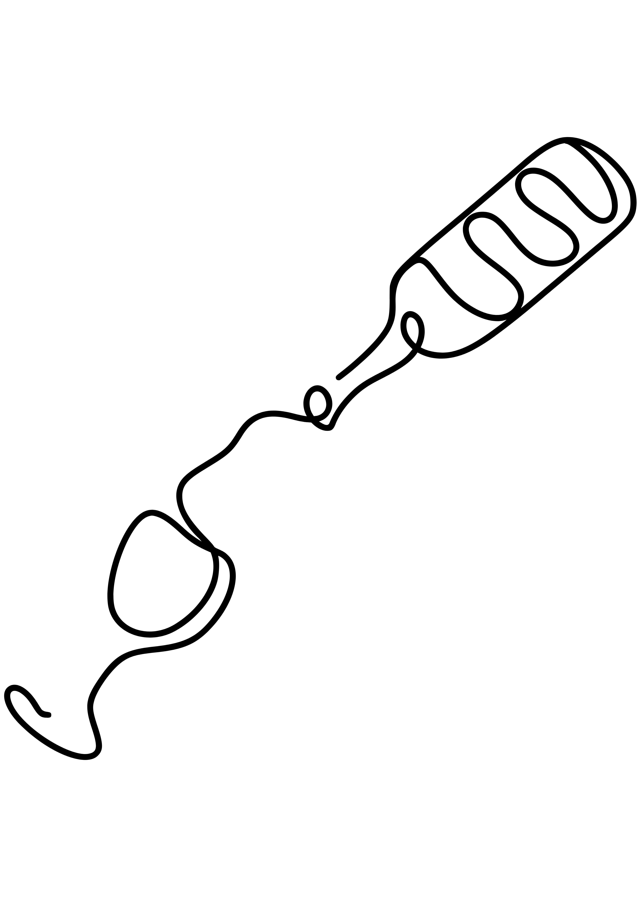

Cedro Frizzante 🍹
Un spritz citronné et élégant, où la liqueur de cédrat s’illumine sous les bulles du prosecco et de l’eau gazeuse. Léger, rafraîchissant et subtilement floral.

🥃 Ingrédients
- 5 cl Liqueur de cèdre
- 4 cl Prosecco
- 3 cl Eau gazeuse
🍸 Verre

Ballon🧊 Préparation

Direct au verre- Remplir le verre de glace
- Verser la liqueur de cèdre
- Ajouter le prosecco
- Compléter avec l’eau gazeuse
- Mélanger délicatement
✨ Décoration
- Citron — 1 tranche
- Romarin — 1 brin